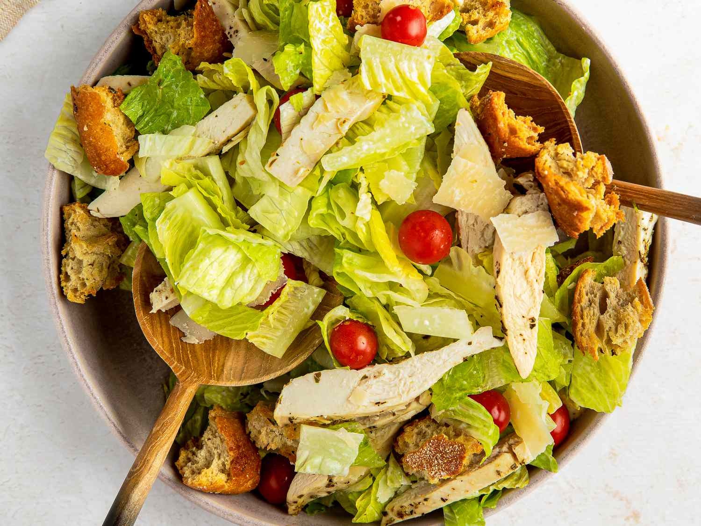

Back Home
Caesar Salad

The best option to be healthy and eat well
Ingredients
- 1/2 cup mayonnaise or extra-virgin olive oil (for a lighter version)
- 2-3 anchovy fillets (or 1 tsp anchovy paste)
- cloves garlic, minced
- 2 tbsp fresh lemon juice
- 1 tsp Dijon mustard
- 1 tsp Worcestershire sauce
- 1/2 cup freshly grated Parmesan cheese
- Salt and black pepper to taste
- 2-3 tbsp milk or water (to thin, if needed)
Preparation
- Make the Croutons: Preheat oven to 350°F (175°C). Toss bread cubes with olive oil, minced garlic, salt, and pepper. Spread on a baking sheet and bake for 10-15 minutes until golden and crisp. Let cool.
- Prepare the Dressing: In a blender or bowl, mash anchovies and garlic into a paste. Whisk in lemon juice, mustard, Worcestershire sauce, and egg yolk (if using). Gradually add mayonnaise or oil while whisking to emulsify. Stir in Parmesan, then thin with milk if desired. Season with salt and pepper.
- Assemble the Salad: Rinse and dry romaine lettuce thoroughly. In a large bowl, toss lettuce with dressing until evenly coated. Add croutons and extra Parmesan. Top with more black pepper and serve immediately.